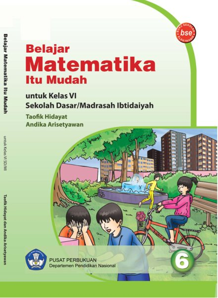

Buku Sekolah Elektronik · Kelas VI SD/MI
Belajar matematika
itu mudah.
Teman belajar matematika untuk kelas VI. Buka buku lengkap di sini, atau simpan PDF untuk belajar kapan saja.
- 150 halaman
- PDF · sekitar 5 MB
- Akses publik

Ruang baca
Pilih halaman atau perbesar tampilan dengan tombol di bawah.
Pembaca PDF memerlukan JavaScript. Kamu juga bisa memakai tautan PDF langsung.
Jika buku tidak tampil pada perangkatmu, buka PDF secara langsung atau unduh bukunya.
Tentang bukuBelajar Matematika Itu Mudah untuk SD/MI kelas VI.
Pusat Perbukuan, Departemen Pendidikan Nasional, 2009.
AtribusiPenulis: Taofik Hidayat dan Andika Arisetyawan.
Isi PDF dan keterangan hak cipta buku asli dipertahankan.